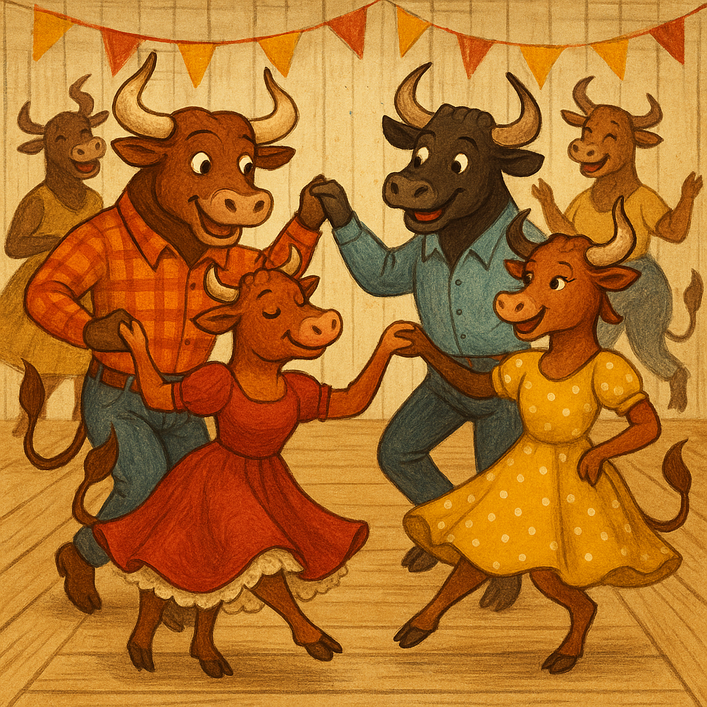

The Abilene, TX area will be privileged to have Dan Norbye, an international caller, come and call a Square Dance during his once a year Texas Tour.
Where: Crane's Craft BBQ at the Wagon Wheel Dance Hall! There is a lot of history with this hall known as the Hall that Flippo built. If you love square dancing you will love this place!
Time: 2 PM to 5 PM
Doors Open: 11 AM for the best BBQ ever! Ask for a "Texas Twinkie".
Hope to see all you square dancers there!
Hosted by Crane's Craft BBQ at the Wagon Wheel Dance Hall